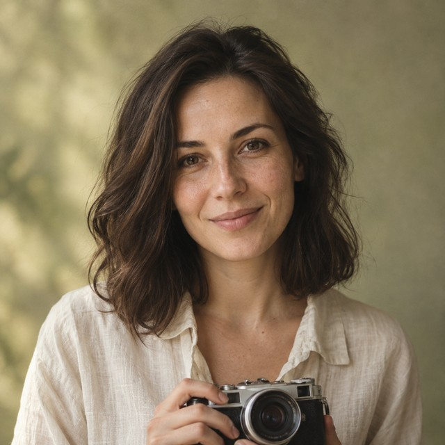
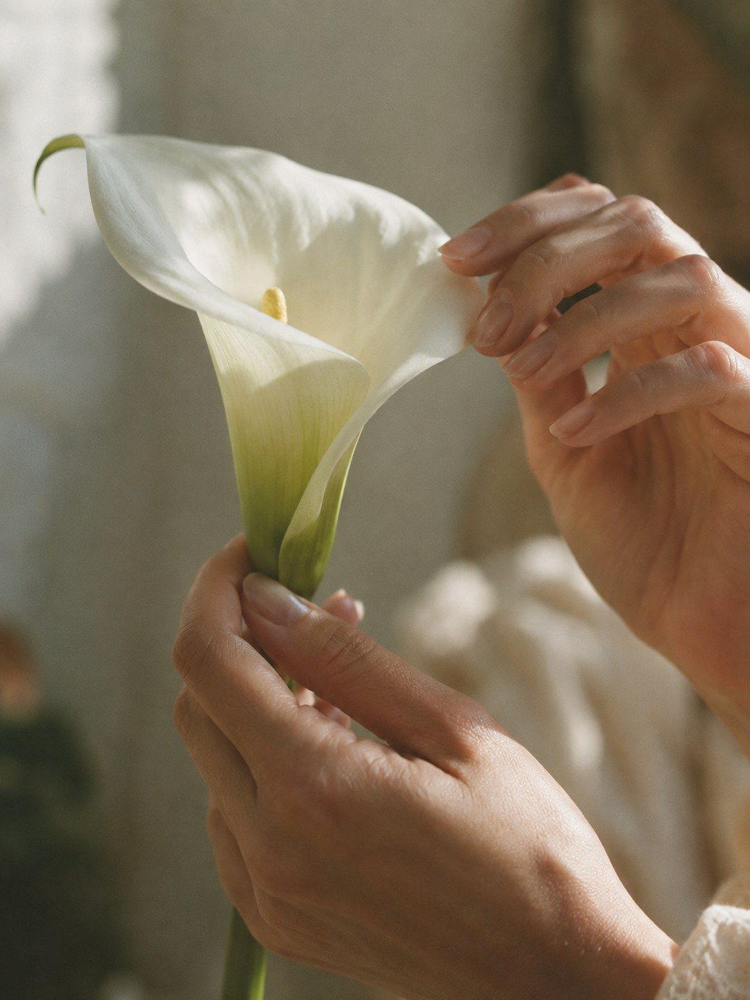

Individual photo session
To see yourself in a new way
1 hour · 40 signature-edited photographs
An easy walk and conversation — no tension, no awkward poses.

MARTA KOVALPHOTOGRAPHERauthor’s photo studio
INDIVIDUAL PHOTO SESSIONS & LOVE STORY

In every glance, every movement, every sincere smile there is something special. My job is to see it and keep it in photographs.Portraits, love stories and creative sessions.
See which one feels like you.
I notice beauty in the little things: a hand moving, a pause, the way you laugh when you forget about the camera.
For me, a session begins with trust. With a conversation, your favourite music, and the freedom to be yourself.
I’ll help you prepare and show you how to feel at ease in front of the camera.
The shoot feels easy, and the photos are ones you’ll want to show everyone.
You feel at ease —
and it shows in the photos.
To see yourself in a new way
1 hour · 40 signature-edited photographs
An easy walk and conversation — no tension, no awkward poses.
For couples, friends, mothers and daughters
1.5 hours · 60 signature-edited photographs
Your glances, jokes and hugs — as real as in life.
For a blog, a brand or your own project
Format and price shaped around your idea
From the first idea to a recognisable visual style.
Every session includes help with styling and location. Photos are ready within 14 days. Studio rental, if needed, is paid separately.
Tell me how you want to feel.
That’s where our story begins.